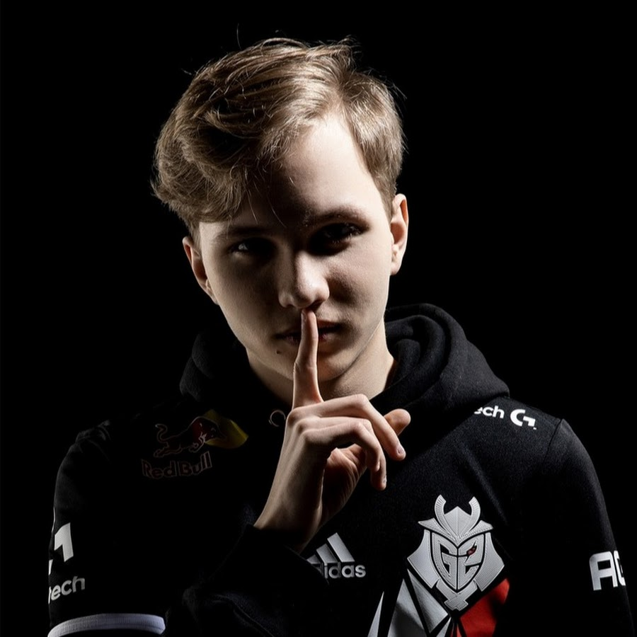

Илья "m0NESY" Осипов — яркий пример вундеркинда в киберспорте.
Начав карьеру в академии NAVI Junior, он быстро привлёк внимание
благодаря феноменальной игре на снайперской винтовке.
В 2022 году, в 16 лет, он совершил громкий переход в G2 Esports,
где сразу же стал ключевым игроком и чемпионом.
За три года он помог G2 выиграть множество престижных турниров,
включая IEM Katowice и IEM Cologne, и утвердился в статусе одного из лучших
снайперов мира.
В 2025 году m0NESY совершил один из самых громких трансферов в истории
Counter-Strike 2, перейдя в Team Falcons в составе международного
ростера "Колоссальной сделки" вместе с Нико "NiKo" и другими звездами.
Этот шаг ознаменовал начало новой главы в его карьере.
| Год | Команда | Ключевые турниры | Результат | Роль и Вклад |
|---|---|---|---|---|
| 2022 | G2 Esports | BLAST Premier: World Final 2022 | Победа | Дебютный триумф и звание MVP. Закрепление в основном составе |
| G2 Esports | PGL Major Antwerp 2022 | 5-8 место | Уверенный дебют на мейджоре | |
| 2023 | G2 Esports | IEM Katowice 2023 | Победа | Ключевой игрок в победе на первом "большом" турнире года |
| G2 Esports | IEM Cologne 2023 | Победа | Стабильно высокие показатели, один из лидеров команды | |
| 2024 | G2 Esports | IEM Cologne 2024 | Победа | Вернули себе титул чемпионов Кёльна. m0NESY — MVP финальной серии |
| G2 Esports | PGL Major Copenhagen 2024 | 5-8 место | Показал высокую индивидуальную форму | |
| 2025 | Team Falcons | Esports World Cup 2025 | Победа | Сенсационная победа в Саудовской Аравии с новой командой. Признан MVP турнира |
Группа: Б9123-09.03.04(3)
Разработчик: Фарухшин Ринат Рустамович